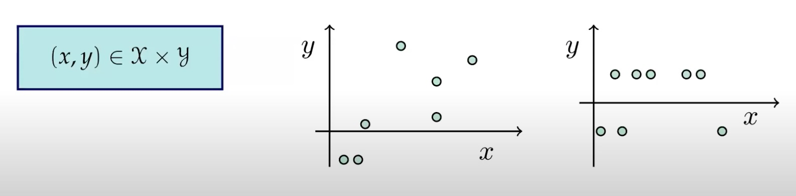
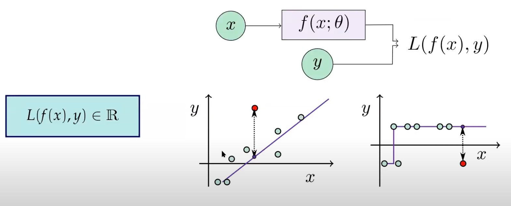

Nature isn’t classical, dammit, and if you want to make a simulation of Nature, you’d better make it quantum mechanical, and by golly it’s a wonderful problem because it doesn’t look so easy. Richard Feynman
Uczenie maszynowe (ale również AI i uczenie głębokie) to nauka i ,,sztuka’’ opisująca jak sprawić by komputery mogły ,,uczyć się’’ na podstawie danych, tak by rozwiązać problemy, których typowe programowanie nie miałoby sensu (lub byłoby zbyt skomplikowane).
In 1959, Arthur Samuel:
a field of study that gives computers the ability to learn without being explicitly programmed.
Dane

Modele
Uczenie nadzorowane (ang. supervised learning) - posiadając oznaczone dane \((x_i, y_i)\) szukamy funkcji \(f(x_i) = y_i\) tak by uogólnić ją na nowe dane. Np. dać kredyt, czy na obrazie jest kot albo pies itp.
Uczenie nienadzorowane (ang. unsupervised learning) - posiadając dane \((x_i)\) szukamy ukrytych struktur w danych.
Uczenie przez wzmacnianie (ang. reinforcement learning) - agent uczy się realizować zadania w środowisku na podstawie nagród i kar.
Jednym z podstawowych celów uczenia maszynowego (a takze i głębokiego), jest przypisanie klasy (target, labels) dla nowych, nieoznakowanych danych.
Istnieją dwa główne typy dla tego zadania:
Regresja – przewidywanie wartości ciągłej,
klasyfikacja - przewidywanie wartości dyskretnej.
Funkcja straty
Funkcja straty mierzy jak przewidywania modelu są oddalone od rzeczywistych wartości.
Pomaga optymalizować parametry modelu przez mechanizm propagacji wstecz
Pozwala na dopasowanie modelu do danych
Mniejsza wartość funkcji straty = lepsza jakość modelu.

Sieci Neuronowe
Model z parametrami do trenowania \(f(x;\theta)= \sigma(Wx+b)\) gdzie \(\theta= \{W, b\}\)
import torchfrom torch.autograd import Variabledata = torch.tensor([(0. , 1.), (0.1 , 1.1), (0.2 , 1.2)])def model(phi, x=None):return x*phidef loss(a, b):return torch.abs(a-b) **2def avg_loss(phi): c =0for x, y in data: c += loss(model(phi, x=x), y)return cphi_ = Variable(torch.tensor(0.1), requires_grad=True)opt = torch.optim.Adam([phi_],lr=0.2)for i inrange(5): l = avg_loss(phi_)print(f"cost: {l}, for phi: {phi_}") l.backward() opt.step()
cost: 3.5805001258850098, for phi: 0.10000000149011612
cost: 3.44450044631958, for phi: 0.29999998211860657
cost: 3.3168272972106934, for phi: 0.49334585666656494
cost: 3.1936793327331543, for phi: 0.6854467988014221
cost: 3.073840856552124, for phi: 0.878169059753418
Obliczenia kwantowe opisują przetwarzenie informacji na urządzeniach pracujących zgodnie z zasadami mechaniki kwantowej.
Uwaga! klasyczne komputery (tranzystory) również działają zgodnie z zasadami mechaniki kwantowej, ale wykonywane operacje opierają się o logikę klasyczną.
Oba kierunki są istotne w procesie przetwarzania danych obecnie i w niedalekiej przyszłości. Dlatego naturalnym pytaniem jest jak je ze sobą połączyć?
QML to realizowanie metod uczenia maszynowego, które mogą być wykonywane na komputerach kwantowych.
Kwantowe uczenie maszynowe możemy określić jako uczenie maszynowe realizowane na komputerach kwantowych. Zasadniczym jest pytanie na ile i czy wogóle komputery kwantowe mogą poprawić jakość modeli uczenia maszynowego i czy pozwalają zrealizować coś więcej niż wykorzystanie klasycznych komputerów.
Historia MK
Początek Mechaniki Kwantowej związane są z pracami Maxa Plancka (1900) i Alberta Einsteina (1905), którzy wprowadzili pojęcie kwantu - czyli najmniejszej porcji energii. Dalszy rozwój Mechaniki Kwantowej związany jest z badaniami takich naukowców jak Niels Bohr, Erwin Schrödinger, Louis de Broglie, Heisenberg, Dirac, Feynman i wielu innych. Pozostałe informacje możesz znaleźć w artykule o obliczeniach kwantowych
Informatyków (najczęściej) nie interesuje, w jaki sposób właściwości fizyczne układów są wykorzystywane do przechowywania informacji w komputerze klasycznym. Podobnie, nie muszą się zastanawiać nad fizycznym mechanizmem, za pomocą którego informacja kwantowa jest realizowana w komputerze kwantowym. Czy prowadząc samochód zastanawiasz się, jak dokładnie działają wszystkie jego części? A pisząc kod modelu, zastanawiasz się, jak został on zaimplementowany w bibliotece?” Informatycy często nie muszą zagłębiać się w szczegóły fizycznej realizacji, skupiając się za to na wydajnym wykorzystaniu technologii komputerowych.
Historia obliczeń kwantowych
1936 Alan Turing opublikował pracę On Computable Numbers, która stanowiła istotny krok w kierunku teoretycznych podstaw obliczeń (Hilbert Problems) - universal computing machine local
1976 Roman S. Ingarden - Quantum Information Theory Roman S. Ingarden wprowadził pojęcie teorii informacji kwantowej, co miało kluczowe znaczenie dla rozwoju komputerów kwantowych.
1980 Paul Benioff - Paul Benioff przedstawił teoretyczną koncepcję komputerów kwantowych jako fizycznych systemów, otwierając drzwi do praktycznych implementacji.
1981 Richard Feynman - zwrócił uwagę na to, że klasyczne komputery nie są w stanie efektywnie symulować procesów kwantowych.
1985 David Deutsch opracował pierwszy opis kwantowej maszyny Turinga i algorytmów przeznaczonych do uruchamiania na komputerach kwantowych, w tym bramek kwantowych.
1994 Peter Shor opracował algorytm faktoryzacji liczb w czasie wielomianowym, co miało znaczenie dla kryptografii i bezpieczeństwa informacji.
1996 Lov Grover - Lov Grover stworzył algorytm Grover’a, który okazał się wyjątkowo efektywny w przeszukiwaniu stanów kwantowych.
2000 Został zbudowany pierwszy komputer kwantowy (5 qubitów) oparty na nuklearnym rezonansie magnetycznym, co stanowiło ważny krok w rozwoju fizycznych platform komputerów kwantowych.
2001 Demonstracja algorytmu Shora potwierdziła praktyczność i znaczenie algorytmów kwantowych.
2007 Firma D-Wave dokonała pierwszej sprzedaży komercyjnego komputera kwantowego, co miało wpływ na rozwój technologii komputerów kwantowych w sektorze prywatnym.
Firma IBM dokonała znaczącego przełomu, pokazując, że klasyczne superkomputery nie są w stanie efektywnie symulować systemów zawierających więcej niż 56 kubitów, co jest znane jako “quantum supremacy.”
23 października 2019: Google ogłosił uzyskanie tzw. quantum supremacy na 53 kubitach.
2020 Zespół Jian-Wei Pana z University of Science and Technology of China dokonał przełomu, realizując 76 fotonowych kubitów na komputerze Jiuzhang.
Od około 1990 roku fizycy i informatycy pracują nad fizyczną realizacją komputerów kwantowych. Jednym z popularnych modeli obliczeń na komputerach kwantowych jest model oparty na kwantowych obwodach (ang. quantum circuit), który wykorzystuje qubity zamiast klasycznych bitów. Podobnie jak w przypadku obwodów klasycznych, w modelu kwantowym definiuje się bramki kwantowe (ang. quantum gates), które pozwalają na wykonywanie operacji na qubitach.
Dlaczego chcemy używać komputerów kwantowych?
Kwantowa złożoność (Quantum Complexity)
Nowy paradygmat wykorzystuje unikalne cechy interferencji, superpozycji i splątania w celu wykonywania obliczeń.
Obecnie realizowany jest w trzech modelach:
Quantum Circuits (Obwody Kwantowe) - oparty na modelu bramkowym, pozwala realizować algorytmy typu QAOA, VQA, oraz metody hybrydowe.
Adiabatyczne Obliczenia Kwantowe (D-Wave) - polegające na minimalizacji energii, z wykorzystaniem optymalizacji QUBO i analogii do modelu Isinga.
Topologiczne Komputery Kwantowe - oparte na topologicznych kubitach.
Problemy, które uważamy za trudne do rozwiązania klasycznie, takie jak optymalizacja, stają się łatwiejsze dla komputerów kwantowych. Przykładem moze być faktoryzacja liczb. Klasyczne komputery nie są w stanie efektywnie symulować działania kwantowych komputerów. Koszt najlepszych symulatorów rośnie wykładniczo wraz z liczbą kubitów. Możliwości komputerów kwantowych są potencjalnie ogromne, ale obecnie istnieją pewne ograniczenia link. Kwantowy komputer może być używany do efektywnej symulacji niemal dowolnego procesu fizycznego zachodzącego w przyrodzie, choć nie zawsze jesteśmy pewni, czy taka symulacja jest możliwa.
Podstawowym faktem przewagi komputerów kwantowych nad klasycznymi jest tzw. parallelizm. Ze względu, iż kubity moga znajdowac się w superpozycji stanów, komputer kwantowy może przeprowadzic obliczenia jednocześnie na wszystkich stanach. Co dokładnie to oznacza, poznamy w dalszej czesci wykładu. Rozważmy sytuację w której chcemy poznac działanie funkcji \(f(x)\) dla pewnego argumentu \(x\) (dla pewnej liczby). Aby znaleźc wynik dla dwóch liczb (np. \(x=0\) i \(x=1\)) klasyczny komputer musi wykonac dwie operacje. Komputer kwantowy może uzuskac ten wynik przeprowadzajac obliczenia jednocześnie dla obu warości. Do wykonania takiej operacji wystarczy jeden kubit. Następnie jeżeli będziemy chcieli obliczyc nasza funkcję dla kolejnych liczb \(x=2\) (która binarnie reprezentowana jest jako \(10\)) oraz liczby \(x=3\) (binarnie \(11\)) musimy dodac kolejny (jeden!) kubit. Dwa kubity moga posłużyc do realizacji czterech równoległych operacji. Jeśli rozważymy 3 kubity znowu mozemy podwoic ilośc operacji (3 kubity maja 8 stanów bazowych). Dodanie kubitu do komputera kwantowego pozwala podwoic liczbę obliczeń. W przypadku klasycznego komputera aby uzyskac taki efekt, potrzeba podwoic rownież liczbę bitów. n-kubitów moze realizowac \(2^n\) równoległych obliczeń.
Dekoherencja, czyli oddziaływanie z otoczeniem, niszczy stan komputera kwantowego i wprowadza błędy obliczeniowe. Istnieje potrzeba zabezpieczenia przed tym zjawiskiem. Obliczenia kwantowe wymagają tzw. korekcji błędów, która pomaga w utrzymaniu integralności obliczeń na komputerach kwantowych. Aktualnie mówimy o erze Noisy Intermediate-Scale Quantum (NISQ), co oznacza, że komputery kwantowe wciąż potrzebują rozwoju w zakresie korekcji błędów i stabilności.
Wykonanie obliczeń związane jest z pojęciem fizycznego doświadczenia. Będzie się ono składać z trzech części:
przygotowanie (przygotuj stan kwantowy kubitów),
ewolucja (przeprowadź transformację za pomocą bramek kwantowych),
pomiar i interpretacja wyników.
Podobnie w informatyce i w analizach danych wykonujemy obliczenia klasyczne. przygotowujemy dane (stan początkowy); następnie wykonujemy program (ewolucja) i odczytujemy wyniki (pomiar).